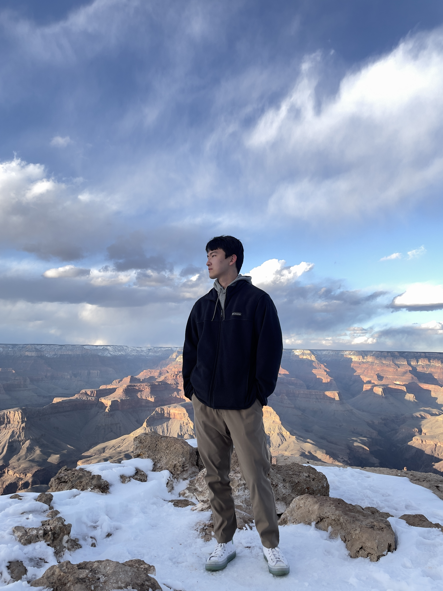

(at Grand Canyon, Arizona, US)
Xikai Meng 孟西恺
I'm currently a Master of Engineering student in Computer Engineering at the
University of Washington, Seattle
(Sep 2025 – Dec 2026). Before that, I received my B.S. in Applied Physics from the
Honors School of Harbin Institute of Technology
(2020 – 2024).
I have ~2 years of ML Systems / AI Infra experience across
AMD,
SenseTime and
Baichuan AI,
with contributions to open-source LLM inference stacks (SGLang, Quark, OpenPPL).
Research Interest: LLM Inference, Speculative Decoding, Quantization, Heterogeneous Computing
Job Interest: ML Systems Engineer, LLM Infra / Inference, AI Compiler & Serving
+1 (206) 797-8906
mengnoah78952@gmail.com |
xikaim@uw.edu (UW)
 GitHub (NoahM)
GitHub (NoahM)